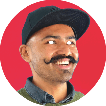

Product designer based in The Hague, interested in growth hacking &
designOps.
Currently designing at
Nord Security.
Previously, for Vermietet.de (ImmoScout24).
Interested in open source & research projects. Feel free to
say hello!
Flip-book + overlay (ADR-0009 verdict ritual)
Static PNG
Live tier C
initializing…
- Likeness — rest pose matches static PNG at 216×216? Wink, not showpiece?
- Weight — JS + PNG (no Three.js / no GLB)
- Build effort — cutout / atlas bake, not an 8 h 3D pipeline
- Runtime — 2D canvas; reduced-motion → static PNG